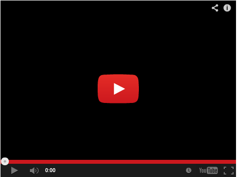

Meril Endosurgery, 2024
Phone Stand for Kibo Reader
Emb. Software
Controls
Mech
Developed and manufactured a prototype of a foldable phone stand
that can be easily carried by the visually impaired in their bag.
Concept was developed so that it can be used on the go to scan books
and documents and convert text into audio using the Kibo App.
Platform
Fusion 360 for design, assembly and simulation.
3D printing in ABS for prototyping.
User-validation in association with Blind Relief Association, New
Delhi

Requirements Study
Fusion 360
Usability Study
User-validation
